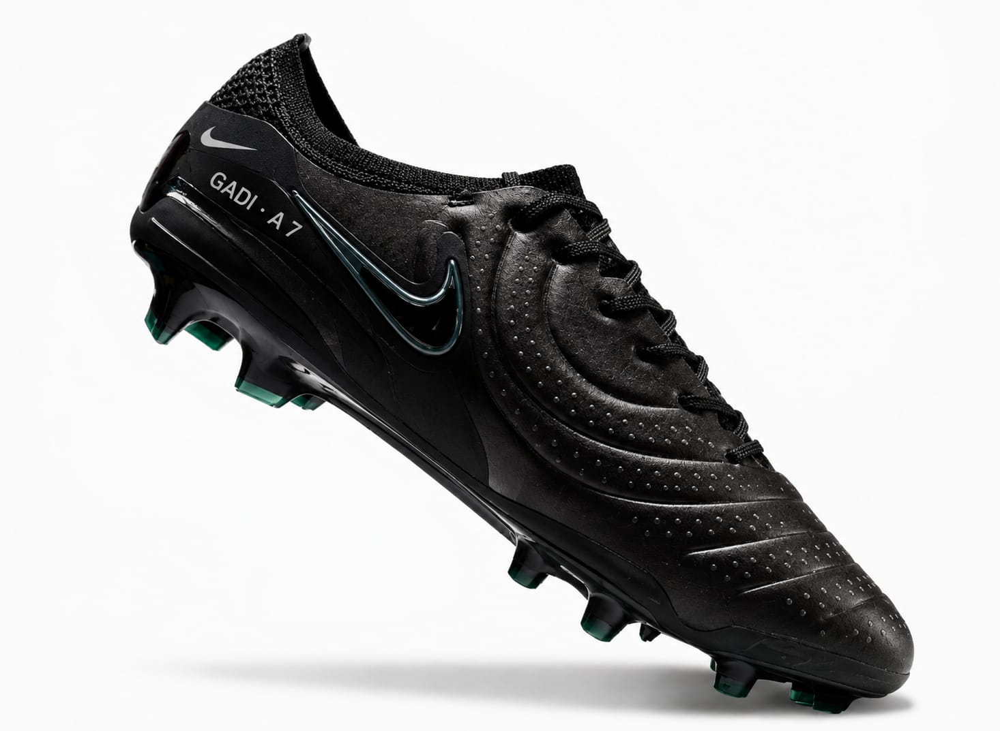

Recuerdas este mini proyecto que te hice? aquel 20 de marzo del 2025 cuando teniamos apenas 5 dias de estar hablando pero la conexion estuvo desde el dia 1 que hablamos de nuevo cuando hice este proyecto estaba temblando de los nervios por que tenia pena era la primera vez que me inspiraba en hacer este tipo de cosas por alguien y ahora lo hago temblando de ansiedad y de dolor, incluso dude en mandartelo pero para mi en tan solo 6 dias por que te lo envie el 21 en solo 6 dias ya eras la personas mas especial y tal como dice en el texto fuiste la persona que me hizo feliz cuando me sentia muy muy solo ahora me siento solo como aquel tiempo, siempre habia estado asi y no es que no supiera estar solo pero ahora duele mas por que extraño a alguien y ese alguien eres tu.
Aun recuerdo de esa noche que hasta puse en modo avion mi telefono para hacerme el misterioso JAJA y funciono aun tengo nuestro chat pero solo llega al 23 de marzo del 2025 queria que supieras que ya eras alguien especial para mi desde ese entonces y por eso lo hice y me puso muy muy feliz el saber que te gusto no paraba de sonreir y asi estuvieron todos los dias que hablamos cada dia esa conexion crecio hasta que fuimos mejores amigos y nos vimos aquel viernes que llegue tarde por mi junta de futbol en Halacho hasta me quite antes para no seguir dejandote esperando JAJA y es cuando te vi salir con Naty y Mayde en ese entonces te reconoci, me acerque a ti y nos vimos con nuestra sonrisa la mia que me deja los ojos chiquitos y la tuya como siempre tan reluciente y entonces nos abrazamos fue el abrazo mas inesperado pero lo senti muy muy sincero de ahi fuimos inseparables me llevaste a la fiesta de tu primo en la piscina, fui en la vaqueria de tu pueblo a verte hice todo lo posible por ir, hasta que fuiste a mi cumpleaños y te vi bajar del carro de tu papá estabas muy muy preciosa en ese entonces te presente como mi amiga aunque yo por dentro sentia algo que no queria aceptar.
Hasta que llego aquel 7 de Junio que llegaste a la vaqueria cuando no pense que ibamos a estar juntos y termino siendo una de las mejores noches de mi vida por que la mejor noche de mi vida fue aquel domingo 9 de Junio que veniste a la corrida y me diste de comer la marquesita en la boca donde ya nos veíamos con ojos de amor pero teniamos miedo de decirlo hasta que llego el dia 10 de Junio esa mañana en la cual me declaraste tu amor y aquella tarde paso lo que considero el recuerdo mas memorable de mi vida aquel primer beso que hasta la fecha no olvido y jamas lo haré fuiste y sigues siendo la mujer de mi vida mi Anita hoy no estas conmigo:( y no sabes la falta que me haces creeme que estoy aprendiendo a soltarte obligo a mi mente a hacerlo por que a mi corazon ya no puedo se quedo contigo me mata no saber de ti de que ya no este en tus planes ni tu en lo mios ni en nuestras metas💔.
Yo te enseñe a vivir sin mi por que en las ultimas semanas te trate mal diciendote que no vine a hacer sentir bien a nadie eso lo dije por que el enojo me cego cuando no te hablaba y tu tampoco lo hacias no queria ceder cuando lo debi haber hecho por que tu estabas en un punto bajo por mis acciones hoy en dia no puedo cambiar nada por que se que ya te perdi, perdi a los dos seres que le causaban paz a mi vida jamas quise fallarte y en verdad en verdad queria una ultima oportunidad por que te lo juro por mi madre, por mi hermanita que iba a hacer las cosas bien y se que diras por que cuando la cague, despues de tu cumplaños me di cuenta de muchas cosas que estaba haciendo mal y queria cambiarlo hasta que paso de los mensajes te lo juro por la memoria de abuela que yo pare en un momento ya habia hecho lo malo pero me arrepenti y lo hice tarde muy tarde, jamas olvidare ese viaje a xmatkuil, esa feria de Halacho, la feria de aca y menos aquella noche en el hostal donde te juro que todo fue real, a diario espero tu mensaje y a diario sueño con eso que cuando me levanto y agarro mi telefono y veo que no es verdad me vuelvo a morir y deseo no haber despertado por que en mis sueños estas conmigo💔.
Ahora estoy muerto en vida asi como tu se que sufres por que te deje con el amor en las manos yo sufro por que vivo con la culpa por que pude haber sido mejor y no lo hice pero más que nada por que te perdi a ti y a mi bebé y ahora tengo miedo por que no estoy podiendo con esto y no se que sera de mi hay momentos donde no quiero vivir por que te juro por mi familia que eras mi vida, como me dijiste la ultima vez, no te cuide y se que quieres hacerlo tu misma por eso ya decidi soltarte pero mi vida, mi corazon se fue con ustedes, cuida mucho de mi Tofy espero el destino me permita verla de nuevo y si no, en algun momento la visitare no fisicamente pero lo hare, compre mis tacos todos negros mi amor como me sugeriste y le puse tu inicial, yo no pierdo la esperanza de que algun dia no se cuando pero se que algun dia te querras enamorar de mi otra vez y me dejaras demostrarte que estoy muy arrepentido de como fui, se que habra una segunda etapa y si no morire con la esperanza, pero tambien te estoy soltando por que se que te hice mucho daño y se que sin mi estaras bien mis ojos ya no quedan chiquito por sonreir por ti por que mi sonrisa se apago ahora quedan chicos por llorar todas las noches estoy muy hundido como me dijiste tu ya has pasado por esto pero yo no, jamas habia perdido al amor de mi vida intenatre ser fuerte por que todo lo malo me esta consumiendo no quiero una vida sin ti y si no es contigo no sera con nadie maás cuidate mucho mi amor, TE AMO MUCHO MI MORENITA:( te esperare toda la vida solo espero que tu jamas me olvides yo no dejare de amarte pero si te soltare y si un dia ya no sabes mas de mi recuerda que te espare y te sigo esperando Ana ya no se como vivir te amo💔.
ATT: Tu Joss, Tu Gad, Tu panzon💔
